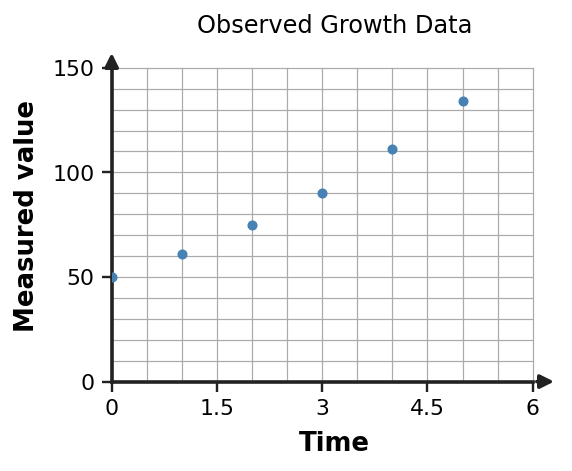

Algebra 1 · Unit 7 · Section 7.5 · Investigation
Exponential Data Modeling Lab
Exponential Modeling with Data
Learning Target: Students will create and analyze exponential models using real-world data.
Directions
- Work with a partner unless your teacher assigns a different grouping.
- Show the evidence you use, not only the final answer.
- When a representation changes, keep the meaning of the quantities attached to your work.
- Revise an answer if later evidence shows that your first claim was incomplete.
Part 1 · Data Ratios
Use the data table and scatterplot to estimate whether an exponential model is reasonable.
| Time | 0 | 1 | 2 | 3 | 4 | 5 |
|---|---|---|---|---|---|---|
| Measured value | 50 | 61 | 75 | 90 | 111 | 134 |

Part 2 · Estimate a Model
Calculate several successive ratios. Choose a reasonable multiplier and write an approximate model beginning at 50.
Part 3 · Predict and Compare
Predict the value at time 6. Explain why your answer should be treated as a model prediction, not an exact measurement.
Part 4 · Model Limit
Give one contextual reason exponential growth may not continue forever even if it fits the observed data well.